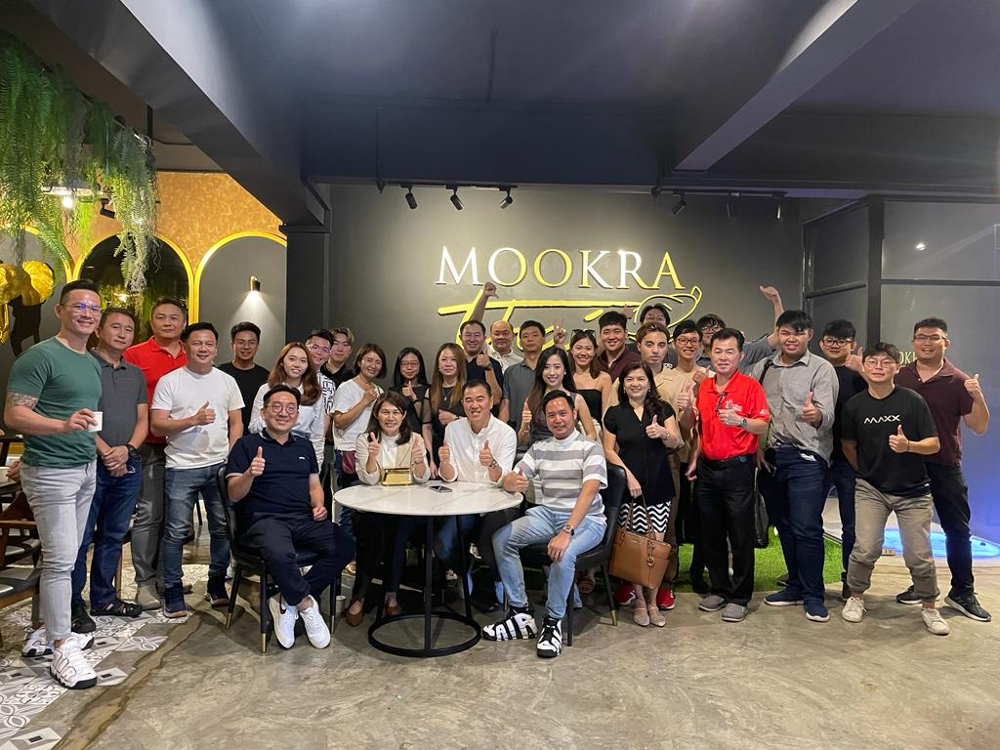

Skills Developed During Internship
During my internship at HHL Agency, I worked as an Administrative Assistant, where I gained hands-on experience in the insurance industry and developed essential administrative and customer service skills. My role required me to communicate with clients, assist in policy renewals, and ensure smooth daily operations within the agency.
Key Responsibilities:
- Assisting customers with insurance inquiries and policy renewals.
- Processing and organizing insurance documents to ensure accuracy and compliance.
- Coordinating with clients to provide updates and reminders about their policies.
Through this experience, I enhanced my attention to detail, communication, and organizational skills while gaining a deeper understanding of insurance policies and customer relationship management. This internship also strengthened my ability to multitask and work efficiently in a dynamic environment.